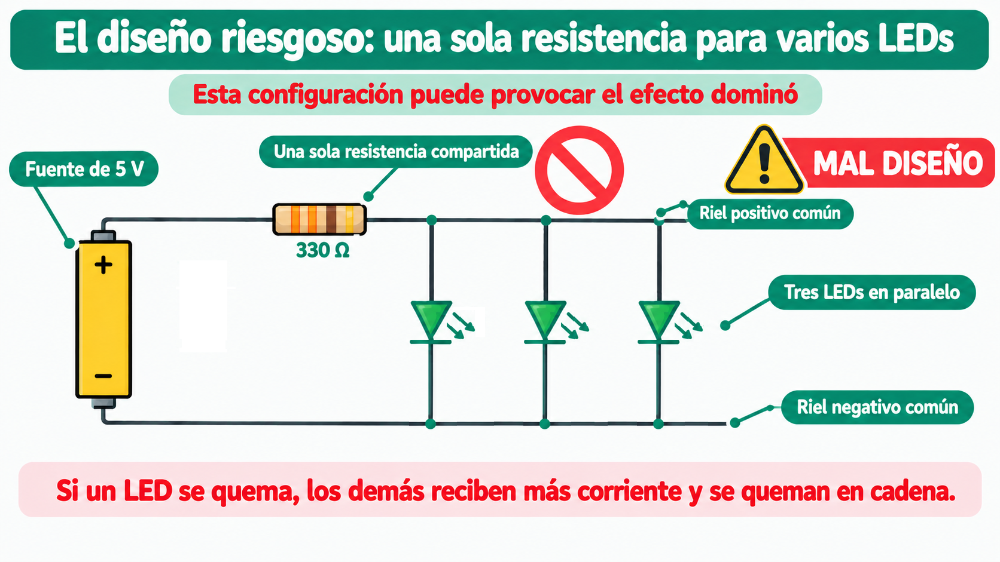
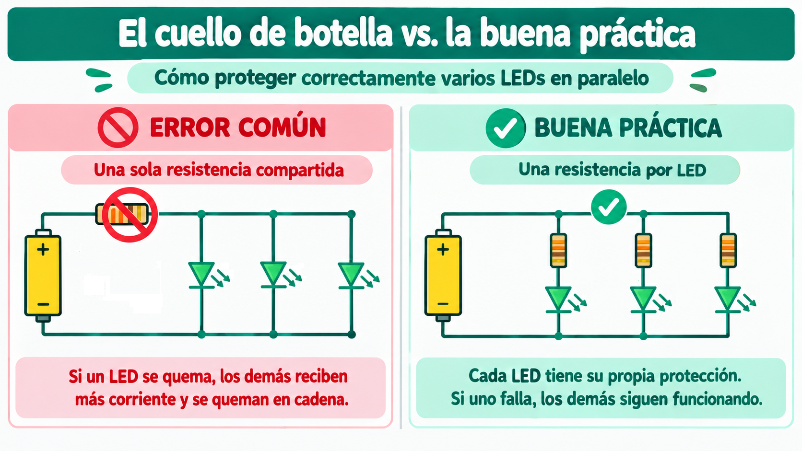
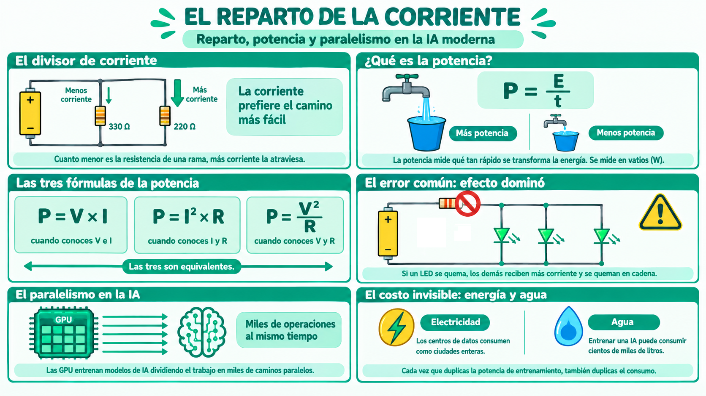

En un circuito en paralelo, la corriente se reparte entre las ramas. Pero no se reparte al azar: la corriente prefiere el camino de menor resistencia. La rama con menos resistencia lleva más corriente. La rama con más resistencia lleva menos.
Este fenómeno se conoce como divisor de corriente, y es la contraparte del divisor de voltaje que se estudia en los circuitos en serie.
💡 Idea clave: en paralelo, el voltaje es el mismo para todas las ramas, pero la corriente se reparte de forma inversamente proporcional a la resistencia de cada rama.
Si tienes dos resistencias en paralelo (R₁ y R₂) alimentadas por una fuente de corriente total I, la corriente en cada rama se calcula así:
Observa con cuidado: la corriente I₁ depende de R₂, no de R₁. Y viceversa. Es un reparto cruzado: cuanto mayor sea la resistencia de la otra rama, más corriente pasa por la mía.
La fórmula del divisor de corriente parece extraña: la corriente que pasa por R₁ depende de R₂, no de R₁. ¿Por qué?
Para entenderlo, partamos de dos hechos:
Entonces, si R₂ es muy grande, poca corriente se va por esa rama. Y como la corriente total I es fija (la que entrega la fuente), casi toda la corriente tiene que irse por la otra rama (R₁). Por eso I₁ aumenta cuando R₂ aumenta: cuanto más "difícil" es el otro camino, más corriente elige el mío.
💡 Analogía del supermercado: imagina dos cajas abiertas. Si una caja está lenta (mucha resistencia), los clientes prefieren la otra caja (más corriente). La corriente total se reparte en proporción inversa a la resistencia de cada rama.
La corriente que circula por cada rama no solo transporta carga: también transporta energía. Y esa energía se convierte en calor en cada resistencia. La potencia disipada en cada rama depende de la corriente que la atraviesa.
Antes de las fórmulas, conviene aclarar qué mide la potencia. La potencia es la rapidez con la que se transforma la energía. Mide cuánta energía se convierte por unidad de tiempo.
Donde P es la potencia, E es la energía transformada y t es el tiempo. La potencia se mide en vatios (W), y un vatio equivale a un julio por segundo (1 W = 1 J/s).
💡 Analogía del grifo: imagina dos grifos que llenan el mismo balde de 10 litros. El grifo A tarda 10 segundos; el grifo B tarda 2 segundos. Los dos entregan la misma cantidad de agua (la misma energía), pero el grifo B lo hace más rápido. Por eso decimos que el grifo B tiene más potencia.
La potencia no mide cuánta energía se usa, sino qué tan rápido se usa.
Estos dos conceptos se confunden con frecuencia, pero son distintos:
| Concepto | Qué mide | Unidad |
|---|---|---|
| Energía | Cuánta energía se transforma en total | julio (J) o kilovatio-hora (kWh) |
| Potencia | Qué tan rápido se transforma esa energía | vatio (W) |
La relación entre ambos es directa: energía = potencia × tiempo. Por eso, la factura del servicio de energía eléctrica se mide en kilovatios-hora (kWh): es la energía total consumida por todos los aparatos conectados a la red —motores, electrodomésticos, iluminación y cualquier otro dispositivo—, que resulta de multiplicar la potencia de cada uno por el tiempo que estuvo en funcionamiento.
💡 Ejemplo cotidiano: una bombilla de 60 W encendida durante 10 horas consume 600 Wh = 0,6 kWh. Una bombilla de 10 W encendida durante 60 horas consume los mismos 600 Wh. Ambas consumen la misma energía, pero la primera lo hace mucho más rápido (tiene más potencia).
Existen tres formas equivalentes de calcular la potencia disipada en un componente. Las tres dan el mismo resultado; solo cambia cuál es más conveniente según los datos que tengas:
La primera es la definición básica. La segunda se usa cuando conoces la corriente pero no el voltaje. La tercera, P = V² / R, es la más útil en circuitos en paralelo, porque el voltaje es el mismo en todas las ramas.
Es una combinación directa de las dos fórmulas anteriores. Partimos de la definición de potencia y sustituimos la corriente con la ley de Ohm (I = V / R):
Así que las tres fórmulas son la misma cosa escrita de tres maneras distintas.
Imagina un circuito en paralelo con dos resistencias: una de 330 Ω y otra de 1 kΩ, ambas alimentadas con 5 V. Comparemos los resultados usando distintas fórmulas.
Con P = V × I (calculando primero la corriente):
Con P = V² / R (directo, sin calcular la corriente):
Las dos fórmulas dan el mismo resultado. Pero en paralelo, la segunda es más directa: no requiere calcular la corriente de cada rama por separado.
💡 Regla práctica: usa P = V × I cuando conoces la corriente; usa P = V² / R cuando conoces la resistencia; usa P = I² × R cuando conoces la corriente pero no el voltaje. Las tres son equivalentes.
En un circuito en paralelo, la potencia total consumida es la suma de las potencias disipadas en cada rama:
En el ejemplo anterior, la potencia total sería:
Este principio es una consecuencia de la conservación de la energía: la energía que entrega la fuente se reparte entre todos los componentes, y la suma de las energías transformadas es igual a la energía total entregada.
💡 Implicación práctica: cuando conectas más ramas en paralelo, la potencia total aumenta. Eso significa que la fuente debe entregar más energía, y disipar más calor. El paralelismo tiene un costo energético.
En paralelo, cada rama debe tener su propia resistencia de protección. Si intentas alimentar varios LEDs con una sola resistencia compartida, ocurren dos problemas graves.

Como la corriente se reparte entre las ramas de forma desigual (por pequeñas diferencias de fabricación), un LED puede recibir más corriente que los otros. Ese LED se calienta, su resistencia baja, y entonces atrae aún más corriente. En poco tiempo, se quema. Y al quemarse, los demás LEDs reciben más corriente, se sobrecargan y también se queman en cadena. Es el efecto dominó.
Si los cinco LEDs consumen juntos, digamos, 100 mA, la resistencia única debe disipar toda esa corriente. Si es una resistencia estándar de 1/4 W, probablemente no aguante y se queme.
💡 La solución profesional: dale a cada LED su propia resistencia. Así, cada rama es independiente y no hay efecto dominó.

Hasta aquí hemos hablado de circuitos. Pero el paralelismo es un concepto mucho más amplio. Es la estrategia de dividir un problema grande en varios problemas pequeños y resolverlos al mismo tiempo.
En los circuitos, el paralelismo permite que la corriente se reparta. En la computación, el paralelismo permite que las tareas se repartan entre varios procesadores. Y en la inteligencia artificial, el paralelismo es la clave del entrenamiento de modelos masivos.
Las GPU (unidades de procesamiento gráfico) son chips con miles de núcleos pequeños que trabajan al mismo tiempo. Mientras un procesador tradicional hace una tarea a la vez (serie), una GPU hace miles de tareas a la vez (paralelo).
Entrenar un modelo de IA como los que usan ChatGPT requiere multiplicar millones de matrices. Cada multiplicación se puede dividir en miles de operaciones independientes. Y esas operaciones se ejecutan en paralelo en los núcleos de la GPU.
💡 La conexión: el paralelismo eléctrico de una protoboard es la versión en miniatura del paralelismo computacional que hace posible la IA. La misma idea: dividir el trabajo en varios caminos independientes.
El paralelismo es una herramienta poderosa. Pero no es gratis. Cada vez que agregas una rama (eléctrica o computacional), agregas también:
Por eso los ingenieros de IA enfrentan un dilema: más paralelismo significa más velocidad, pero también más consumo y más calor. La eficiencia energética se ha convertido en uno de los mayores retos de la industria.
💡 La frontera de la IA: los centros de datos modernos consumen tanta electricidad como ciudades enteras, y la mayor parte se convierte en calor que hay que evacuar. Mejorar la eficiencia es tan importante como mejorar la velocidad.
La eficiencia mide qué fracción de la energía que consume un sistema se convierte en trabajo útil (y qué fracción se pierde como calor).
Por ejemplo:
💡 El reto de la IA: hacer modelos más potentes sin multiplicar el consumo eléctrico. Cada punto de eficiencia que se gana se multiplica por millones de operaciones por segundo en un centro de datos.
Hay un costo del que casi nunca se habla: el agua. Los centros de datos que entrenan modelos de IA generan enormes cantidades de calor, y para enfriarlos se usa agua. Mucha agua.
Algunos datos para dimensionar el problema:
Este es uno de los grandes debates éticos de la IA actual: ¿vale la pena el costo ambiental de entrenar modelos cada vez más grandes? Y si lo vale, ¿quién debe pagarlo?
💡 La cara oculta del paralelismo: cada vez que duplicas los procesadores de un centro de datos, duplicas también el consumo de agua. La eficiencia energética y la eficiencia hídrica se han convertido en dos de los mayores desafíos de la industria de la IA.
En sistemas críticos donde un fallo puede tener consecuencias graves, el paralelismo se usa como estrategia de redundancia. La idea es simple: si un componente falla, otro toma su lugar.
Algunos ejemplos concretos:
💡 El principio del paralelo redundante: no se trata solo de hacer las cosas más rápidas, sino de hacerlas más seguras. En sistemas críticos, la redundancia no es un lujo: es un requisito.
Vas a diseñar y analizar un circuito en paralelo con dos LEDs y dos resistencias, calculando el reparto de corriente y la potencia disipada en cada rama. Al final, verificarás tus predicciones con el multímetro.
💡 Dos formas de hacer este taller: puedes hacerlo en el aula (con el kit y un multímetro) o resolverlo teóricamente con cálculos. Si tienes acceso a un multímetro, puedes verificar tus predicciones.
Este taller es la primera vez que vas a medir corriente con el multímetro. Esta función es distinta a las anteriores (voltaje y resistencia) porque requiere una conexión en serie, no en paralelo.
⚠️ La regla más importante del modo corriente: el multímetro debe conectarse en serie con el circuito, no en paralelo.
Si por error lo conectas en paralelo (como si midieras voltaje), el multímetro hará un cortocircuito y su fusible interno se quemará. Es el error más común con esta función.
💡 Recuerda: para medir corriente, el multímetro se convierte en parte del circuito. Es como instalar un contador de agua en una tubería: el agua debe pasar por dentro del medidor. Por eso debe estar en serie.
Cuando termines, escribe una nota breve al final de tu hoja de registro. No es una tarea, es una reflexión. Puedes escribir sobre:
Si las dos resistencias fueran de valores muy diferentes (por ejemplo, 330 Ω y 10 kΩ), ¿cómo se repartiría la corriente entre las dos ramas? ¿Cuál recibiría más corriente? ¿Por qué?
⚠️ Seguridad: trabaja siempre con 3 V o 5 V. Nunca uses voltajes de pared (110 V o 220 V). Siempre usa resistencias de protección con los LEDs, una por cada LED en paralelo.
Durante décadas, las computadoras funcionaron en serie: un solo procesador ejecutaba una tarea a la vez. Si querías que una computadora fuera más rápida, solo podías hacer una cosa: aumentar la velocidad del procesador. Hasta que alguien pensó: ¿y si en lugar de una tarea rápida hacemos muchas tareas al mismo tiempo?
En 1981, un joven estudiante del MIT llamado Danny Hillis (1956) tuvo una idea revolucionaria: diseñar una computadora con miles de procesadores trabajando en paralelo. En lugar de un cerebro grande y rápido, propuso un ejército de cerebros pequeños coordinados.
En 1983 fundó Thinking Machines Corporation y en 1986 lanzó la Connection Machine CM-1: una computadora con 65.536 procesadores trabajando simultáneamente. Cada procesador era diminuto y lento por sí solo, pero juntos podían resolver problemas que ninguna computadora tradicional podía abordar.
Al principio, muchos ingenieros se rieron. Decían que el paralelismo era demasiado complicado, que coordinar 65.536 procesadores era un caos. Pero Hillis demostró que no solo era posible, sino que era el futuro.
La Connection Machine desapareció en los años 90, pero su idea sobrevivió. Las GPU modernas (que hoy entrenan los modelos de IA) son herederas directas de aquel sueño: miles o millones de núcleos pequeños trabajando en paralelo.
Cuando OpenAI entrenó GPT-4, no usó una computadora rapidísima: usó decenas de miles de GPU trabajando en paralelo durante meses. El principio es el mismo que Hillis imaginó en 1981: dividir el trabajo en muchos caminos independientes.
La lección: a veces la solución no es ir más rápido, sino ir varios a la vez. El paralelismo es una de las ideas más poderosas de la ingeniería moderna, y ya estaba presente en los circuitos que estudiaste hoy.
Fuentes: archivos históricos de Thinking Machines Corporation y biografías del MIT.
Dale play y en 7 minutos descubrirás:
💡 Ten tu calculadora o tu cuaderno a mano: hay cálculos que querrás hacer tú mismo.